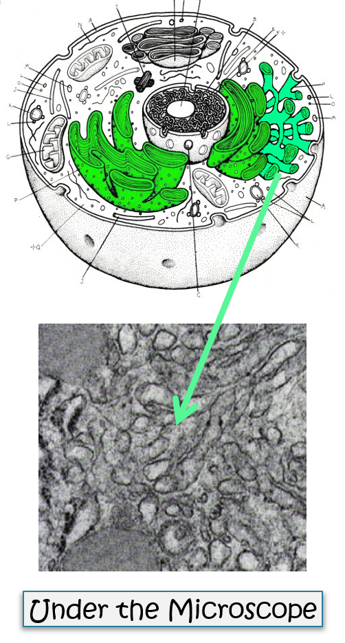

Smooth Endoplasmic Reticulum
Why is the Smooth Endoplasmic Reticulum "Smooth"?
- The Endoplasmic Reticulum (ER) has two parts, a Smooth Endoplasmic Reticulum (Smooth ER) and a Rough Endoplasmic Reticulum (Rough ER).
- The Rough ER has ribosomes attached to it which makes it "rough" while the Smooth ER does not.
- The Smooth ER makes lipids (fats) and breaks down toxins.
